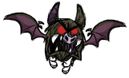

| This article may contain instructional language and subjective recommendations. Readers should identify the content clearly. You can help by rewriting text from an objective point of view and trimming instructions. |
| This article may contain instructional language and subjective recommendations. Readers should identify the content clearly. You can help by rewriting text from an objective point of view and trimming instructions. |
|
|
| “ | Go for the eyes! | ” |
| –Wilson | ||
When exploring the world of Don't Starve, it is inevitable that the player will stumble upon monsters that can pose a threat or are there to kill them. This WIP guide is designed to assist players in dealing with monsters in all situations, rain or snow.
While your character can actually brawl and punch enemies to death, most playable characters in Don't starve are not known for their physical prowess and even the smallest of the enemies will easily outdamage and kill your character if unprepared, so you'll need weapons for dealing damage, and armor for your character to wear for protection.
Almost every item that the character can wield in his/her hands can be used as a weapon (except for Divining rods). From fishing rods to pickaxes, and from walking canes to dark swords, every item that can be placed in the Hands slot of a certain character has its own damage value and can be used to hit enemies. This section will not cover traps, since their main usage is for stationary defenses.
Most creatures deal a great amount of damage and can wear down a character in a relatively small number of hits. Armor offers protection by absorbing a percentage of the damage dealt by an enemy hit, losing durability in the process.
Characters may wear armor on both their head and their torso, stacking multiplicatively against enemy attacks (which means, the last equipped armor absorbs a percentage of the initial damage, and then, the armor equipped in first place absorbs a percent of the damage that bypassed the first damage reduction). Finally the damage that bypasses both armors is then received by your character. For more in-depth info and theorycraft, check Armor.
Creatures in Don't Starve may be separated in classes, depending on their normal behavior against external threats and character proximity.
Passive creatures will never attack your character or other creatures, even if they are being dealt damage and will actively avoid your character if he/she gets too close.Passive creatures are:
Neutral creatures tolerate your character and other creatures' presence and will only fight back if attacked first or threatened.
While some neutral creatures won't mind your character's presence and allow it to an extent, others will actively avoid your character, and to engage them your character will either need a ranged weapon or need to corner them against the terrain or a structure.
Neutral, non-"frightened" creatures are:
Neutral, "frightened" creatures are:
(1)Treeguards will only attack the creature that chops down a nearby tree (the final "chop" that cuts down the tree itself); while most of the time will be your character, if your character has befriended a Pig and is the pig the creature that lands the last chop on the tree, the Treeguard will attack the Pig while staying neutral to your character, still being an active creature in the world. Pacified Treeguards (those put to sleep before by planting pine cones) will stay neutral unless attacked.
(2) While Pigs, Bunnymen and Smallish Tallbirds will not actively run away from you and may even step into the player, they will quickly fall back a short distance if you (or themselves) move too close to each other.
Aggressive creatures will immediately attack your character (and natural enemies) when they get too close to each other. Most of the aggressive creatures in the world are highly territorial and will only chase your character some distance away before returning to their spawn location, while others will chase you a long distance or even forever.
Aggressive creatures are:
Small enemies in the game are vulnerable to stunlocking; a stunlockable monster being hit by any kind of attack will become stunned for a small time frame; if your character keeps attacking the monster repeatedly the stun timer will continually reset allowing the monster to be killed without any kind of retaliation
Creatures currently vulnerable to stunlocking (as of game version The End of the Beginning)
Kiting, (also known as Hit-and-Run) is the action of running back and forth between creature attacks, hitting the creatures in the small time frame available before they start attacking again. Kiting itself may refer to both Defensive Kiting and Offensive Kiting mechanics. The standard kiting mechanic when fighting lone, kiteable creatures, is the following:
All melee monsters in the game are vulnerable to defensive kiting. As long as your character keeps moving "away" (doesn't need to be in an exact straight line, just the general direction) from the creature when it starts their attack animation, your character will outrange the creature attack radius before the animation ends, counting that attack as a "miss".
Defensive kiting is less effective against monsters that attack in packs since you may get attacked from several angles at the same time, with separate attack timers.
The most common exception to this mechanic are ranged monsters, since projectile speeds are always faster than movement speeds and thus, no creature can outrange a projectile. You'll need to run in a zig-zag pattern, or make a turn once a ranged attack animation starts to avoid those kind of attacks.
Ranged creatures not vulnerable to defensive kiting are:
Also, some creatures in the game have developed a defensive kiting behavior themselves, thus, once engaged, will stay in motion, continually moving away from their main target (which can be the player or another creature) until their attack period is reset. Creatures with defensive kiting behavior will only kite the enemy they are attacking, thus, other enemies may land attacks normally as long as they can predict their movement well enough to position themselves.
Creatures with defensive kiting mechanics:
Most creatures in the game are vulnerable to offensive kiting. Once creatures end their attack animation several seconds must pass until they can attack again; on these seconds most creatures will either stand still, make some kind of animation (barking, growling,...) or will keep moving towards you if they're melee, readying themselves for their next attack. Your character may use that time to hit the creatures several times without any kind of retaliation, then start a defensive kiting procedure once their attack period is reset.
Check a particular creature wiki page or the AP column in the Monster info table for updated attack period values.
Mobs that are vulnerable to offensive kiting.
Creatures that have developed a defensive kiting behavior (see defensive kiting above) are usually immune to offensive kiting from their main target.
Situations arise when engaging mobs directly would be lethal or at least wasteful in terms of resources. There are two main ways to get around that: using allies in combat or turning mobs against each other.
The following options are available for direct air for combat:
Character-specific followers are:
While this does work for many hostile mobs, some are more difficult and require a more advanced approach.
Hostle creatures have a so-called "aggro radius". A "personal space" around them that will make them hostile towards your character or natural enemies if you (or them) cross it. Highly aggressive creatures have a very large aggro radius, while less aggressive creatures have a much smaller one. In this guide, the aggro radius will be measured in Berry Bushes to give players a rough estimate.
| Batilisk | |
|  |
|
| Health | 50 |
| Damage | 20 |
| Attack Period | 1 |
| Attack Range | 1.5 |
| Walking Speed | 8 |
| Loot | |